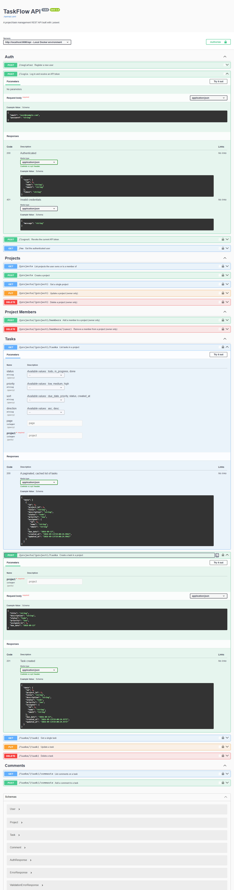

TaskFlow API

The Problem
Most personal PHP projects stop at basic CRUD. TaskFlow API was built to go further, a production-grade project and task management REST API that demonstrates the architectural patterns and engineering discipline expected in a real production codebase, authorization boundaries, validated input, async processing, a caching strategy, and automated quality gates, rather than being a tutorial-level demo. It's a multi-tenant backend for a Jira/Asana-style workflow tool: users create projects, invite team members with distinct roles, assign and track tasks through their lifecycle, and collaborate via comments.
My Role
Sole developer, owning the project end-to-end: API design, authorization, background processing, caching, testing, and CI.
Technical Decisions
Policy-based authorization
Access control is enforced through dedicated Policy classes
(ProjectPolicy, TaskPolicy) rather than
ad-hoc conditionals scattered across controllers, every write
action is checked against a single, testable source of truth for
who can do what.
Form Requests and API Resources for a consistent contract
Every mutating endpoint is backed by its own Form Request class, keeping validation rules declarative and reusable. Responses are shaped through API Resource classes, giving the API a consistent, versionable JSON contract and a single structured error envelope across validation, authentication, and not-found failures.
Queued jobs instead of inline side effects
Task-assignment emails are dispatched as queued jobs rather than sent inline, keeping API response times independent of external mail delivery.
Tag-based response caching
Task list responses are cached per filter/pagination combination using cache tags, with precise invalidation on writes, avoiding both stale data and unnecessary cache churn.
Static analysis, linting, and CI on every push
Static analysis via PHPStan/Larastan at level 6, enforced code style via Laravel Pint (PSR-12 + Laravel conventions), and a PHPUnit test suite covering authentication, authorization boundaries, CRUD flows, and validation edge cases, plus unit tests for policies and enums. GitHub Actions runs lint, static analysis, and the full test suite on every push.
API-first design with live documentation
The complete API surface is specified in OpenAPI 3.0 and exposed as a live, interactive Swagger UI, every endpoint can be inspected and exercised directly from the browser, request and response schemas included.
Containerized infrastructure
Fully containerized with Docker Compose (PHP-FPM, Nginx, MySQL, Redis, and a dedicated queue worker), with a documented deployment path to Railway for a publicly accessible live instance.
Key Functionality
- Token-based authentication via Laravel Sanctum (register, login, logout, current-user lookup)
- Project management with role-based access (owner vs. member), including inviting and removing members
- Full task lifecycle tracking (status and priority) with filtering, sorting, and pagination
- Threaded comments for task collaboration
- Asynchronous email notifications on task assignment, processed by a queue worker
Project Information
- Category: Backend REST API (PHP, Laravel)
- Type: Personal project
- Role: Solo developer
- Timeline: 2026